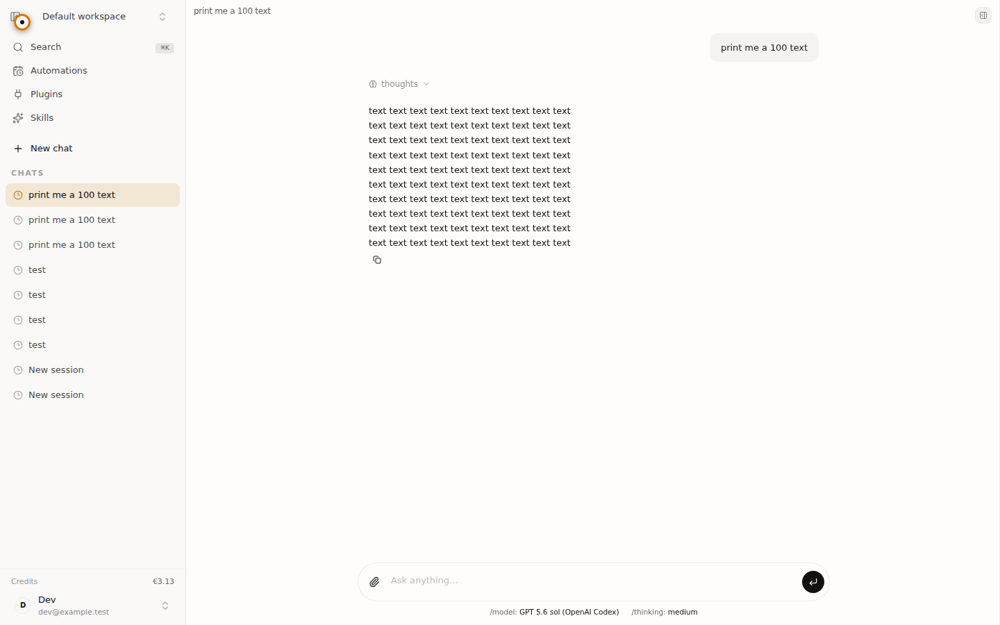
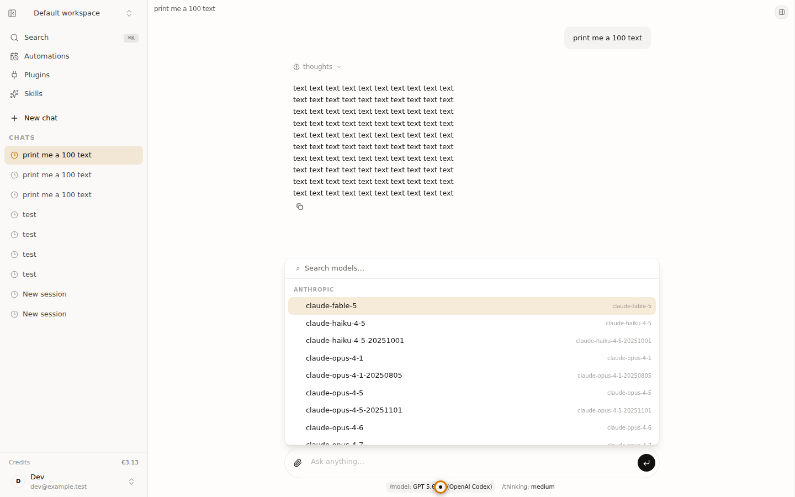
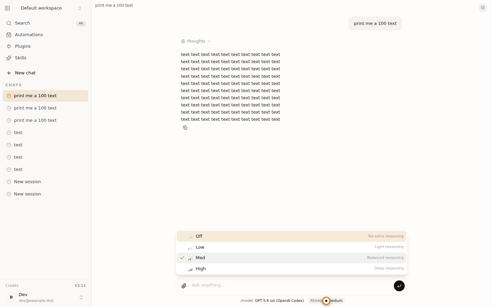
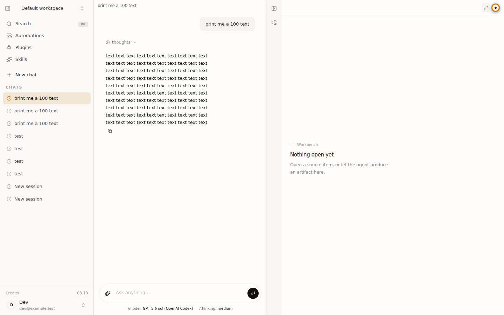
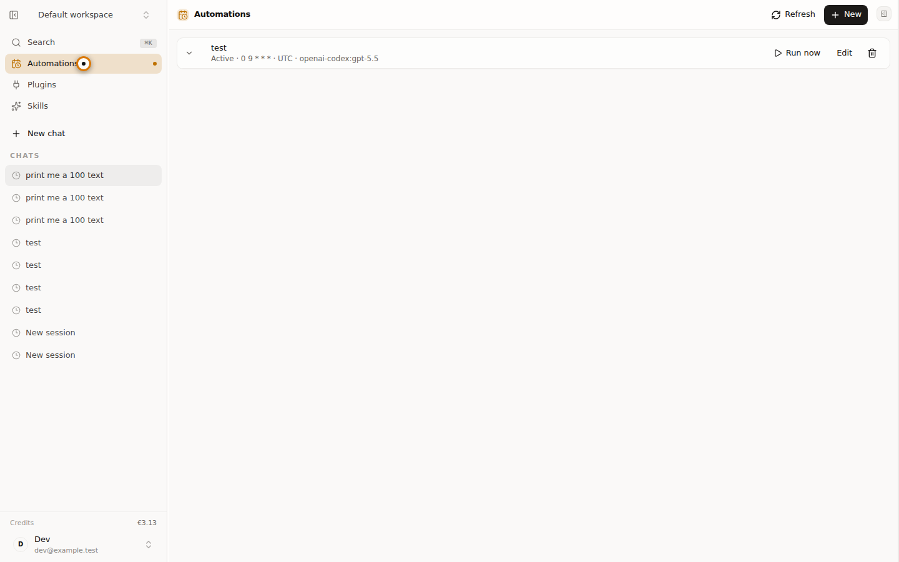

Declared operator model: mac/qwen3.6-35b-a3b (not attested by the capture runner)
| State | Status | Evidence |
|---|---|---|
| Authentication | PASS | {"assertionVisible":true,"absentTextSatisfied":true,"url":"http://127.0.0.1:5173/workspace/3c5c457e-d1af-4d0b-ba8e-c4559cdca86b"} |
| Authenticated workspace | PASS | Expected DOM state visible |
| Model picker | PASS | Expected DOM state visible |
| Thinking picker | PASS | Expected DOM state visible |
| Workbench | PASS | Expected DOM state visible |
| Automations | PASS | Expected DOM state visible |

1cf5874cc6b5f17e…
6d1f9011bb3f397a…
5513e7853a4dd6a2…
ee929cc28b71ac34…
1364df0eb9d40301…Hard gates: BLOCKED — 6 PASS · 0 FAIL · 0 BLOCKED interaction states, with 4 scenario-phase network failures and 3 orchestration-compliance failures.
mac/qwen3.6-35b-a3bopenai-codex/gpt-5.6-solworkflow-hard-gates-failed-and-no-material-high-confidence-product-fixGate summary · Operator invocation · Critic invocation · Critic result · Fix decision · Execution decision